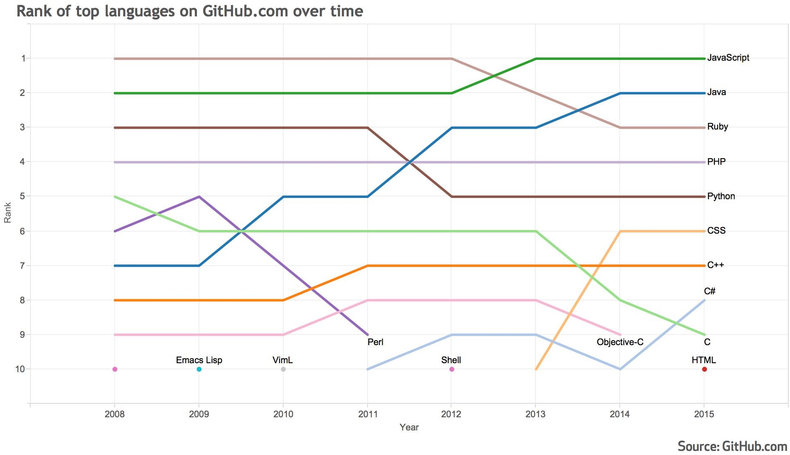

How Node.js powers the entire new frontend architecture
Created by Martin Götte
A very brief introduction
About Node.js
First introduced at the European JSConf 2009 by Ryan Dahl
Combines Google’s V8 JavaScript engine (used by Chrome), an event loop and a low-level I/O API
Event-driven, non-blocking infrastructure for building highly concurrent software
Fast and scalable
Why is it so popular?
Minimal core functionality exposes minimum amount of complexity by default
Easily extendable by using third-party modules
Get it up and running is a matter of minutes ...
It's just JavaScript
Javascript is the top language on github.com since 2013
But isn't JavaScript this hacky language that was created in 10 days back in 1995 by some guy at Netscape? Why would anyone want to work with that?
Because it has come a long way since then!
ECMAScript 5 & ECMAScript 6 (aka. ECMAScript 2015)
const activeQuestions = questionsMap
.map(obj => obj.questions.filter(el => el.active)
.reduce((a, b) => a.concat(b), [])
.map(obj => obj.question);
We write everything in ES6 (& some early ES7) - code gets automatically transpiled to ES5 to make older browsers happy.
Additional tools like eslint, flow (static type checker) or jscs (codestyle checker) enable strict rules to improve code quality, if needed.
Setting up Node.js is a matter of minutes?
# Inside (OS X) terminal
$ curl -L http://git.io/n-install | bash
$ n latest
# Verify
$ node -v # 5.1.0
$ npm -v # 3.3.12
# Use it on the console
$ node
> console.log('Hello World!');
Hello World!
Yes there is also an installer at: http://nodejs.org/#download
What was this "npm" in the previous screen?
"NODE PACKAGE MANAGER"
Global and local (project level) mode
Install, update, uninstall (...) node_modules
Custom run scripts
How is a project managed?
Package.json!
{
"name": "ContentFE",
...
"devDependencies": {
"eslint": "1.8.0",
...
},
"dependencies": {
"react": "0.14.0",
...
},
"scripts": {
"stage": "NODE_ENV=stage node ./build/server/start",
"test": "mocha --recursive --compilers js:babel/register",
"start": "npm run watch:client",
"watch:client": "node node_modules/.bin/webpack-dev-server",
}
That's very easy to manage and maintain ...

Where and how do we use it?
Right here!
This presentation is a Node.js app, including a basic http server, running on port 8000
// start.js
import http from 'http';
function handleRequest(request, response) {
response.end(`It Works!! Path Hit: ${request.url}`);
}
const PORT = 8000;
const server = http.createServer(handleResponse);
server.listen(PORT, () => {
console.log(`Server is running on http://localhost:${POST}`);
});
# Start the server
$ node ./start.js
Server is running on http://localhost:8000
Is that all?
No!
Literally everything we do is based on Node.js
- Everything on the server: including the server itself
- Everything on the client: all libraries get bundled into one JS file, we could even import core modules and use them
- Our local dev environment: compiling, building, linting, test runner, coverage, watching, hot reloading, ...
So just knowing JavaScript gives you super powers!
"With great power comes great responsibility!"
-- Uncle Ben